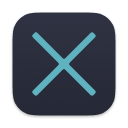

Transparent proxy for macOS and Windows
bash /Volumes/Lux*/install.sh
This removes quarantine, signs the app, installs to /Applications, sets up elevation, detects corporate proxy certs, and launches Lux.